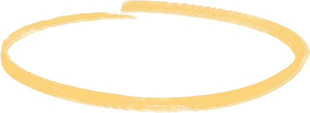
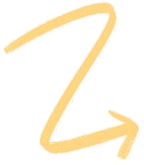
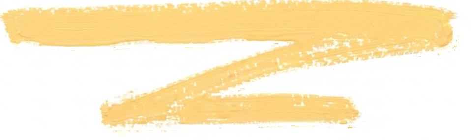

Temas
Tratados

- Monitoreo del proceso de elaboración del packing vs. pedido.
- Revisión y seguimiento de los registros de desvíos, identificando tendencias, causas recurrentes y oportunidades de mejora.
- Capacitación en herramientas de análisis de causas, aplicando Diagrama de Ishikawa y 5 Porqués para la identificación de causas raíz y definición de acciones correctivas.
Pendientes a
realizar

- Orden y limpieza del área de Depósito, aplicando criterios de organización, seguridad y eficiencia.
- Relevamiento y actualización de los registros bromatológicos, asegurando su vigencia, trazabilidad y correcta gestión documental.
Acciones
acordadas
próximo
encuentro

- Diseño y revisión del proceso de packing y preparación de pedidos.
- Identificación de puntos de control críticos y oportunidades de mejora.
- Revisión de los KPI actuales y definición de nuevos indicadores de gestión.
- Estandarización de criterios de trabajo y controles.
- Identificación de acciones orientadas a mejorar la eficiencia, trazabilidad y calidad operativa.